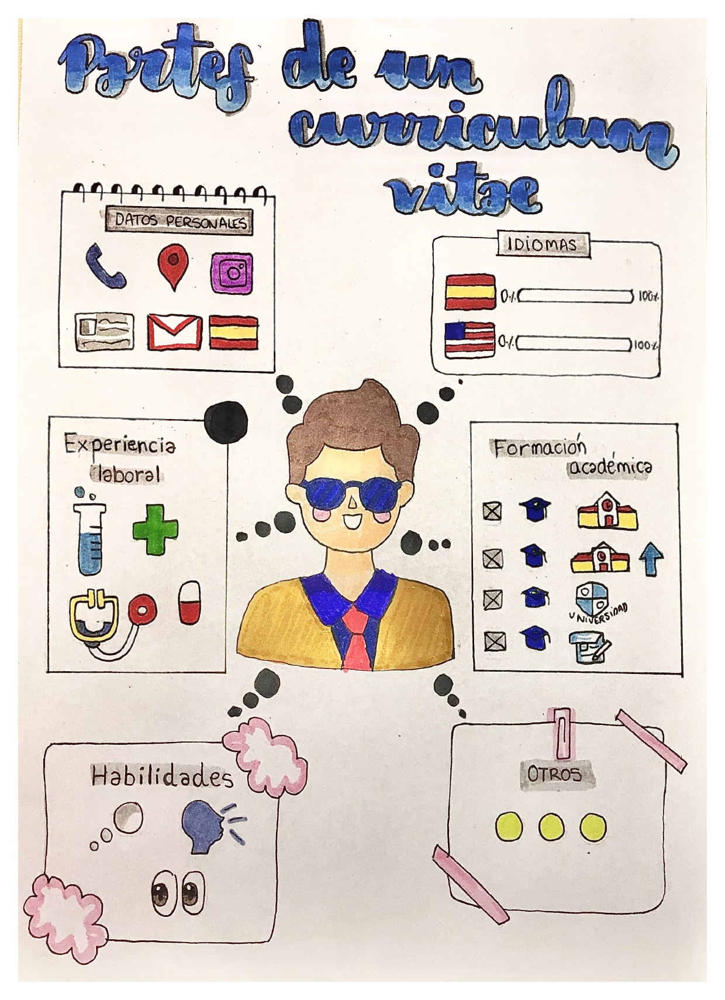

1. Vayamos por partes
Ya has visto varios currículums y sabes que siempre deben aparecer determinados apartados como los siguientes:

1. Partes del currículum:

Pero no solo es importante el QUÉ incluir, sino el CÓMO presentarlo. Observad la siguiente infografía, en la que se encuentran consejos fundamentales que debes tener en cuenta al diseñar tu CV.
Pero podría ser más completa y queremos saber más. Buscad dentro de la infografía el apartado “PARA SABER MÁS” y extraed una recomendación nueva que incluiríais en la infografía en el apartado de contenido y estructura y otra que pondríais en el apartado de aspectos lingüísticos y formales.
Lectura facilitada
Ya has visto varios currículums.
En todos los currículums deben aparecer los siguientes apartados:
Datos personales
Formación académica
Idiomas
Experiencia laboral
Habilidades
Otros datos
Mira este “Visual Thinking”.
Ahí tienes todos los apartados que debe tener un currículum.
Ya hemos visto qué información debemos incluir.
Ahora tenemos que saber cómo presentar esa información.
Mira la siguiente infografía.
Ahí tienes algunos consejos para aprender a diseñar tu currículum vitae.
Pero queremos tener más información.
Busca dentro de la infografía el apartado “PARA SABER MÁS”.
Pincha en los enlaces que aparecen en el apartado.
Lee las recomendaciones que aparecen en los enlaces.
Elige e incluye 1 recomendación nueva en los siguientes apartados:
- Contenido.
- Estructura.
- Aspectos lingüísticos.
- Aspectos formales.

Definición:
Es la capacidad o aptitud para realizar una actividad.
Ejemplo:
Tengo mucha habilidad para patinar.

Definición:
Algo que te animan a realizar porque es bueno, agradable o tiene beneficios positivos.
Ejemplo:
Me están dando recomendaciones para hacer deporte.
Apoyo visual